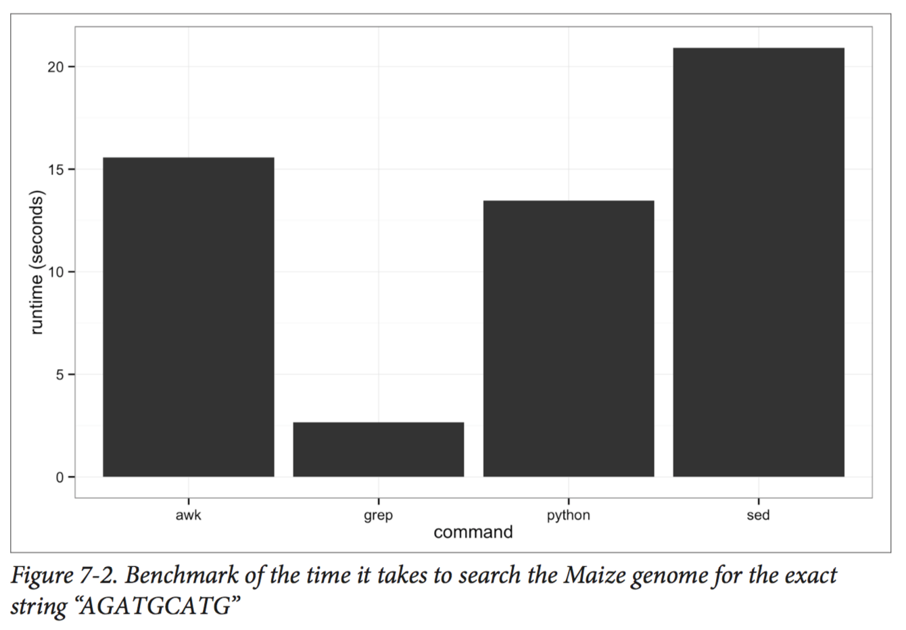

class: center, middle # UNIX Data Tools ## Buffalo Chapter 7 ??? Notes for the _first_ slide! --- # Overview -- ## In Chapter 3 we learned the basic operations within the Unix shell: -- * standard out and standard error streams of data -- * how to redirect our data streams -- * how to efficiently run a series of commands using pipes -- * how to manage command processes -- ## Here, we'll learn a number of UNIX tools that will allow us to inspect and process data --- ## Inspecting a data file for the first time: `head` -- * Use the `cd` command to navigate into the `chapter-07-unix-data-tools` folder in the Buffalo online resources -- * We can inspect a file by using the `cat` command to print its contents to the screen: ``` $ cat Mus_musculus.GRCm38.75_chr1.bed ``` -- * That's a little unwieldly...perhaps we just want to see the first few lines of a file to see how it's formatted. Let's try: ``` $ head Mus_musculus.GRCm38.75_chr1.bed ``` -- * If we want to see less or more of a given file, we can specify the number of lines using the `-n` option: ``` $ head -n 3 Mus_musculus.GRCm38.75_chr1.bed ``` --- ## Inspecting a data file for the first time: `tail` -- * Similar to `head`, you can use the `tail` command to inspect the end of a file: ``` $ tail -n 3 Mus_musculus.GRCm38.75_chr1.bed ``` -- * `tail` can also be useful for removing the header of a file; this is particularly useful when concatenating files for an analysis: ``` $ tail -n +2 genotypes.txt ``` -- * And here's a handy trick for inspecting both the head and tail of a file simultaneously: ``` $ (head -n 2; tail -n 2) < Mus_musculus.GRCm38.75_chr1.bed 1 3054233 3054733 1 3054233 3054733 1 195240910 195241007 1 195240910 195241007 ``` --- ## Additional uses of `head` -- * We can also use `head` to inspect the first bit of output of a UNIX pipeline: ``` $ grep 'gene_id "ENSMUSG00000025907"' Mus_musculus.GRCm38.75_chr1.gtf | head -n 1 ``` -- * When including head at the end of a complex UNIX pipeline, the pipeline will only run until it produces the number of lines dictated by `head` -- * Why is this important or useful? This dummy pipeline may help: ``` $ grep "some_string" huge_file.txt | program1 | program2 | head -n 5 ``` --- ## Inspecting files and pipes using `less` -- * `less` is what is known as a "terminal pager"; it allows us to view large amounts of text in our terminal -- * Whereas with `cat` the contents of our file flash before our eyes, with `less` we can view and scroll through the file's contents -- * Let's observe the difference between `cat` and `less` using a file from the Buffalo Chapter 7 materials: Try: ``` $ cat contaminated.fastq ``` -- Then try: ``` $ less contaminated.fastq ``` -- * While viewing the file in `less` try navigating with the space bar and the `b`, `j`, `k`, `g`, and `G` keys. To exit the file, press `q` --- ## Using `less` to highlight text matches and check pipes -- * Highlighting text matches can allow us to search for potential problems in data -- * For example, imagine we download useful Illumina data from another study and it's not clear from the documentation whether adapter sequence has been trimmed -- * We can search for a known 3' adapter sequence using `less`: ``` $ less contaminated.fastq # then press / and enter AGATCGG ``` -- * `less` can also be used to check the individual components of a pipe under construction: ``` $ step1 input.txt | less $ step1 input.txt | step2 | less $ step1 input.txt | step2 | step3 | less ``` -- * The commands will only run until a page of your terminal is full, limiting computation time --- ## Inspecting files using the `wc` command -- * The default of `wc` is to provide the number of lines, words, and bytes (characters) in a file: ``` $ wc Mus_musculus.GRCm38.75_chr1.bed Mus_musculus.GRCm38.75_chr1.gtf ``` -- * Each line of data entry in the .bed file should correspond to a single line of data entry in the .gtf file. Notice any problems? -- * Using `head`, see if you can inspect the two files and resolve this issue -- * The discrepancy in the line numbers, may have been more clear had we only inspected the number of lines: ``` $ wc -l Mus_musculus.GRCm38.75_chr1.bed Mus_musculus.GRCm38.75_chr1.gtf ``` --- ## Inspecting file size using the `ls` and `du` commands -- * Before downloading or moving or running an analysis on a file, it is useful to know the file size -- * There are a few ways we can extract this information -- * First, we can use our old friend, the `ls` command with the `-l` and `-h` options: ``` $ ls -lh Mus_musculus.GRCm38.75_chr1.bed ``` -- * Or we can use the `du` command, also with the `-h`, or "human readable" option: ``` $ du -h Mus_musculus.GRCm38.75_chr1.bed ``` -- * Personally, I prefer the less verbose format of `du`, particularly when inspecting a large number of files --- ## Inspecting the number of columns in a file with `awk` -- * Another useful piece of information we may want to know about a file is its number of columns -- * We could find this by visually inspecting the first line of the file, but this open us up to human error: ``` $ head -n 1 Mus_musculus.GRCm38.75_chr1.bed ``` -- * A better solution is to have our computers count the columns for us using an `awk` one-liner: ``` $ awk -F "\t" '{print NF; exit}' Mus_musculus.GRCm38.75_chr1.bed ``` -- * `awk` is a bit different than some of the basic UNIX commands we've been learning...it is actually a simple programming language in itself...we'll come back to it in more depth later --- ## Number of columns in files with headers -- * Our handy `awk` script works well for the `Mus_musculus.GRCm38.75_chr1.bed` file, but what about for the `Mus_musculus.GRCm38.75_chr1.gtf file`? -- * We can get around this issue by employing the `tail` command we learned earlier: ``` $ tail -n +6 Mus_musculus.GRCm38.75_chr1.gtf | awk -F "\t" '{print NF; exit}' ``` -- * In the Buffalo book, this one-liner outputs that there are 16 columns...is this what you get? -- * Thinking back to the first few chapters in Buffalo and our discussion regarding "robust" and "reproducible" code, why might this be considered a "brittle" solution? -- * Can you think of a more robust solution? -- ``` $ grep -v "^#" Mus_musculus.GRCm38.75_chr1.gtf | awk -F "\t" '{print NF; exit}' ``` -- * How might this be a brittle solution? --- ## Using the `cut` command to extract specific columns -- * On occasion, we will want to extract a subset of specific information from a file -- * The `cut` command assumes tab delimitation and allows us to extract specific columns of a tab-delimited file -- * For example, say we wanted just the start positions of the windows in our .bed file: ``` $ cut -f 2 Mus_musculus.GRCm38.75_chr1.bed | head -n 3 ``` --- ## Using the `cut` command to extract specific columns -- * The `-f` option allows us to specify columns in ranges (e.g., `-f 3-8`) and sets (e.g., `-f 1,3,5`) but _DOES NOT_ allow us to order columns (e.g., `-f 7,3,1`) -- * For example, we can extract chromosome, start site, and end site from our .gtf file by first removing the header and then cutting out the first, fourth, and fifth columns: ``` $ grep -v "^#" Mus_musculus.GRCm38.75_chr1.gtf | cut -f 1,4,5 | head -n 5 ``` -- * We can also specify the delimiter in differently formatted files like .csv: -- ``` $ cut -d "," -f 2,3 Mus_musculus.GRCm38.75_chr1_bed.csv | head -n 3 ``` --- ## Tidying things up with `column` -- * Often times, when we inspect a tab-delimited file with `head`, the results are fairly messy: ``` $ grep -v "^#" Mus_musculus.GRCm38.75_chr1.gtf | cut -f1-8 | head -n3 ``` -- * This can make it difficult to understand file contents -- * Fortunately, there's a UNIX program/option combination to tidy things up: `column -t` ``` $ grep -v "^#" Mus_musculus.GRCm38.75_chr1.gtf | cut -f 1-8 | column -t \ | head -n 3 ``` -- * `column` should only be used for file inspection in the terminal, redirecting its standard out to a file will introduce variable numbers of spaces which could cause problems in downstream analysis -- * `column` can also be used with files with other delimiting characters: ``` $ column -s "," -t Mus_musculus.GRCm38.75_chr1_bed.csv | head -n 3 ``` --- ## `grep`: one of the most powerful UNIX tools -- * Thus far we've only scratched the surface of the utility of `grep` -- * In addition to being useful, `grep` is _fast_ -- <div style="text-align:center"></div> --- ## `grep`: one of the most powerful UNIX tools -- * The program `grep` requires a _pattern_ to search for and a _file_ to search through: ``` $ grep "Olfr418-ps1" Mus_musculus.GRCm38.75_chr1_genes.txt ``` -- * Quotes around the pattern prevent our shell from trying to interpret symbols in the pattern -- * `grep` will also return partial matches: ``` $ grep Olfr Mus_musculus.GRCm38.75_chr1_genes.txt | head -n 5 ``` -- * If a partial match is not desired, we can prevent this using the `-w` option which matches entire words -- * For example, in the `example.txt` file we want to match everything but "bioinfo": ``` $ cat example.txt $ grep -v "bioinfo" example.txt $ grep -v -w "bioinfo" example.txt ``` --- ## `grep`: one of the most powerful UNIX tools -- * General `grep` rule: always be as restrictive as possible to avoid unintentional matches -- * If the matching line itself does not provide enough context, the `-B` and `-A` options can be helpful: ``` $ grep -B1 "AGATCGG" contam.fastq | head -n 6 $ grep -A2 "AGATCGG" contam.fastq | head -n 6 ``` -- * `grep` search patterns can also be made more flexible and powerful with _Basic Regular Expressions_ (BRE) and _Extended Regular Expressions_ (ERE) -- * An example of a BRE: ``` $ grep "Olfr141[13]" Mus_musculus.GRCm38.75_chr1_genes.txt ``` -- * An example of an ERE: ``` $ grep -E "(Olfr218|Olfr1416)" Mus_musculus.GRCm38.75_chr1_genes.txt ``` --- ## Additional `grep` uses with various options -- * Say we're interested in the number of small nuclear RNAs in our set of genes: ``` $ grep -c 'gene_biotype "snRNA"' Mus_musculus.GRCm38.75_chr1.gtf ``` -- * Or perhaps we only want `grep` to extract the word matches to our search pattern, not the entire line: ``` $ grep -o "Olfr.*" Mus_musculus.GRCm38.75_chr1_genes.txt | head -n 3 ``` --- ## Identification of non-ASCII files and characters -- * In bioinformatics, many programs will assume that our input text files are encoded in ASCII -- * Occasionally, often due to human manipulation of data files, our data can include include an invisible non-ASCII character that throws our program for a loop -- * To easily determine whether a given file is encoded in something other than ASCII, the `file` command can be quite useful: ``` $ file Mus_musculus.GRCm38.75_chr1.bed Mus_musculus.GRCm38.75_chr1.gtf $ file improper.fa ``` --- ## Illustrating the trouble a non-ASCII character can cause -- * To show how non-ASCII characters can cause problems, we'll install the program `bioawk` from github -- ``` $ git clone git://github.com/lh3/bioawk.git $ cd bioawk $ make $ sudo cp bioawk /usr/local/bin/ ``` -- * Or if you've installed `Homebrew`: ``` $ brew tap homebrew/science $ brew install bioawk ``` -- * Now let's apply the following `bioawk` one-liner which should produce the reverse complement of our sequences: ``` $ bioawk -cfastx '{print revcomp($seq)}' improper.fa ``` -- * Shoot...`bioawk` choked on our second sequence...non-ASCII character!! <div style="text-align:center"></div> --- ## Sleuthing out our non-ASCII character with `hexdump` -- * `hexdump` will identify the problematic character and the `-c` option will print the character as well: ``` $ hexdump -c improper.fa 0000000 > g o o d - s e q u e n c e \n A 0000010 G C T A G C T A C T A G C A G C 0000020 T A C T A C G A G C A T C T A C 0000030 G G C G C G A T C T A C G \n > b 0000040 a d - s e q u e n c e \n G A T C 0000050 A G G C G A C A T C G A G C T A 0000060 T C A C T A C G A G C G A G 221 0000070 G A T C A G C T A T T \n 000007c ``` --- ## Sorting plain-text data with `sort` -- * Sorting plain text data can be necessary because: -- 1. Some operations are more efficient when working on sorted data -- 2. In order to find unique lines, we must first have sorted data -- * First, let's sort the `example.bed` file without options to see if we can figure out how the default program works: ``` $ sort example.bed ``` -- * Options allow us to sort by specific columns in various orders and to tell `sort` that our data are numeric rather than alpha-numeric: ``` $ sort -k1,1 -k2,2n example.bed ``` -- * Now see if you can figure out how to sort the `Mus_musculus.GRCm38.75_chr1_random.gtf` file, first by chromosome, then by window start site --- ## Additional features of `sort` -- * Since sorting very large files can be computationally intensive, we may want to check whether a file is already sorted first using the `-c` option: ``` $ sort -k1,1 -k2,2n -c example.bed $ echo $? $ sort -k1,1 -k2,2n example.bed > example_sorted.bed $ sort -k1,1 -k2,2n -c example_sorted.bed $ echo $? ``` -- * We can also sort files in reverse order using the `-r` option: ``` $ sort -k1,1 -k2,2n -r example.bed ``` -- * But how is this sorting? -- * Can you think of a way to sort in reverse order based on both columns 1 and 2? -- * What if we want to sort in forward order by column 1 and reverse order by column 2? --- ## Advanced sorting options in GNU -- * The `-V` option can recognize numbers inside of strings...how might this be useful? -- * Inspect the entire `example2.bed` file: -- ``` $ cat example2.bed ``` -- * Why might we want to recognize numbers within a string here? -- ``` $ sort -k1,1 -k2,2n example2.bed $ gsort -k1,1V -k2,2n example2.bed ``` -- * In the event that you want to sort a truly enormous file, there are modifications to `sort` that can be applied to allocate more memory to the program: ``` $ sort -k1,1 -k4,4n -S2G Mus_musculus.GRCm38.75_chr1_random.gtf $ gsort -k1,1 -k4,4n --parallel 4 Mus_musculus.GRCm38.75_chr1_random.gtf ``` --- ## Finding unique values using the program `uniq` -- * After first inspecting the entire `letters.txt` file, run the `uniq` program on this file and see if you can understand how this program works -- ``` $ cat letters.txt $ uniq letters.txt ``` -- * What do we need to do to get a truly unique list of letters? -- ``` $ sort letters.txt | uniq ``` -- * And what if we want unique values but still want want a count of each letter? -- ``` $ sort letters.txt | uniq -c ``` -- * And if you're still not convinced that this could be useful, try this: ``` $ grep -v "^#" Mus_musculus.GRCm38.75_chr1.gtf | cut -f3 | sort | uniq -c ``` --- ## Finding unique values using the program `uniq` -- * The `uniq` output can also be sorted based on entry counts by piping to `sort` and using the `-n` option: ``` $ grep -v "^#" Mus_musculus.GRCm38.75_chr1.gtf | cut -f3 | sort | uniq -c | \ sort -n ``` -- * What if you wanted these listed from most to least common in the file? -- * We can also use the combination of `sort` and `uniq` to gather information from multiple columns in a file: ``` $ grep -v "^#" Mus_musculus.GRCm38.75_chr1.gtf | cut -f3,7 | sort | uniq -c ``` -- * Or we can use these programs to process and inspect a subset of data from a file...for example, all the features associated with a particular gene: ``` $ grep "ENSMUSG00000033793" Mus_musculus.GRCm38.75_chr1.gtf | cut -f3 | sort \ | uniq -c ``` --- ## Merging the contents of two files with the program `join` -- * The contents of two files can be merged by joining the files based on a common column -- * In the following two files, what would be the common column to use for a join? ``` $ cat example.bed $ cat example_lengths.txt ``` -- * In order to complete the join, we must first sort _both_ files on the common column ``` $ sort -k1,1 example.bed > example_sorted.bed $ sort -c -k1,1 example_lengths.txt ``` -- * Let's talk through the following syntax to make sure it's clear: ``` $ join -1 1 -2 1 example_sorted.bed example_lengths.txt > example_with_lengths.txt ``` --- ## Merging the contents of two files with the program `join` -- * Let's also look at the number of lines in our files to see if the join was complete: ``` $ wc -l example_sorted.bed example_lengths.txt example_with_lengths.txt ``` -- * Now let's see what happens when there is not complete overlap in our common columns: ``` $ head -n2 example_lengths.txt > example_lengths_alt.txt $ join -1 1 -2 1 example_sorted.bed example_lengths_alt.txt $ join -1 1 -2 1 example_sorted.bed example_lengths_alt.txt | wc -l ``` -- * Because chr3 is absent from the `example_lengths_alt.txt` file, it is omitted entirely from the join -- * The GNU `join` option `-a` allows us to include these "unpairable" lines in our output file: ``` $ gjoin -1 1 -2 1 -a 1 example_sorted.bed example_lengths_alt.txt ``` --- ## Processing data with the `awk` programming language -- * Unlike the UNIX programs we've been learning, `awk` is a full-fledged programming language -- * `awk` is simpler then `python` and not built for complicated tasks, but it's great for quick data-processing tasks -- * To learn `awk` we must understand how it: 1. Processes records 2. Uses pattern-action pairs -- * `Awk` processes data a record at a time and records are composed of fields -- * `Awk` assigns the entire record to variable `$0`, field 1 to `$1`, field 2 to `$2`, etc... -- * In pattern-action pairs, `awk` first tries to match a specified pattern in a record or field and, if this is successful, the specified action is carried out --- ## Processing data with the `awk` programming language -- * We can mimic the `cat` program with `awk` by omitting the pattern component of a pattern-action pair: ``` $ awk '{ print $0 }' example.bed ``` -- * Similarly, we can also mimic `cut`: ``` $ awk '{ print $2 "\t" $3 }' example.bed ``` -- * Standard arithmetic operators (+, -, *, /, etc...) can be used in the pattern component of pattern-action pairs -- * For example, here our pattern is matching .bed file features that are at least 18bp long and the implicit action is to print matches to standard out: ``` $ awk '$3 - $2 > 18' example.bed ``` --- ## Processing data with the `awk` programming language -- * We can also link patterns in a chain to apply multiple conditions in our pattern using the `&&` (AND), `||` (OR), and `!` (NOT) operators -- * For example, if we want the .bed features that are on chromosome 1 AND at least 10bp long: ``` $ awk '$1 ~ /chr1/ && $3 - $2 > 10' example.bed ``` -- * We can also include more explicit actions than just printing an entire record to standard out: ``` $ awk '$1 ~ /chr2|chr3/ { print $0 "\t" $3 - $2 }' example.bed ``` --- ## Additional functionality of the `awk` programming language -- * The pattern-process `awk` tools we have learned thus far are very useful for processing files, but `awk` has many more useful tools -- * The `BEGIN` and `END` commands can allow us to initialize variables before implementing our pattern-process across records (`BEGIN`) and use this variable afterwards (`END`): ``` $ awk 'BEGIN{ s = 0 }; { s += ($3-$2) }; END{ print "mean: " s/NR };' example.bed ``` -- * Here we initialize the variable `s` and increment (`+=`) this variable by the length of each feature across all records and then divide this by `NR`...what is `NR`? -- * `NR` can also be used to extract intermediate records (i.e., lines) in a file (the same process we discussed using `head` and `tail` in a pipe): ``` $ awk 'NR >= 3 && NR <= 5' example.bed ``` --- ## Additional functionality of the `awk` programming language -- * `awk` can also be used to convert a .gtf file into a .bed file: ``` $ awk '!/^#/ { print $1 "\t" $4-1 "\t" $5 }' Mus_musculus.GRCm38.75_chr1.gtf | \ head -n 3 ``` -- * Note that the start site of features in the .bed file is 1 less than the start site of features in the .gtf file: .bed uses 0-indexing and .gtf uses 1-indexing -- * Associative arrays (similar to `Python` dictionaries) can also be very useful in `awk`: ``` $ awk '/Lypla1/ { feature[$3] += 1}; \ END { for (k in feature) \ print k "\t" feature[k] }' Mus_musculus.GRCm38.75_chr1.gtf ``` -- * Could this also be done with basic UNIX commands? --- ## `bioawk`: `awk` functionality more tailored to bioinformatics -- * `bioawk` is similar to `awk` but it can recognize common bioinformatics file formats (e.g., .bed, .sam, .vcf, .gff, .fastx) and includes useful programs for bioinformatics ``` $ bioawk -c gff '$feature ~ /gene/ && $source ~ /protein_coding/ \ {print $seqname,$end-$start}' Mus_musculus.GRCm38.75_chr1.gtf | head -n 4 ``` -- * You could also use `bioawk` to convert a `fastq` into a `fasta` file: -- ``` $ bioawk -c fastx '{print ">"$name"\n"$seq}' contam.fastq | head -n 4 ``` -- * Or to print the number of sequences in a `fastq/fasta` file, something you couldn't do with `wc`: ``` $ bioawk -c fastx 'END{print NR}' contam.fastq ``` --- ## `bioawk`: `awk` functionality more tailored to bioinformatics -- * Finally, the option `-c hdr` can be very useful as it sets the field variables to the names given in a file header -- * For example, take another look at the `genotypes.txt` file: ``` $ head -n 4 genotypes.txt ``` -- * Let's use the `-c hdr` option to find the markers where ind_A and ind_B have the same genotype: ``` $ bioawk -c hdr '$ind_A == $ind_B {print $id}' genotypes.txt ``` --- ## Using the `sed` program to edit text in a stream -- * In addition to many other functions, we can use `sed` to make simple "find and replace" edits to our files: ``` $ head -n 3 chroms.txt $ sed 's/chrom/chr/' chroms.txt | head -n 3 ``` -- * If this file were many Gb in size, this stream editing would be much, much faster than opening the file and doing a find and replace in a text editor -- * The above syntax only substitutes the first occurence of "chrom" on a line, to do this across all "chrom" values we'd need to use the global option of `sed`: ``` $ sed 's/chrom/chr/g' chroms.txt ```